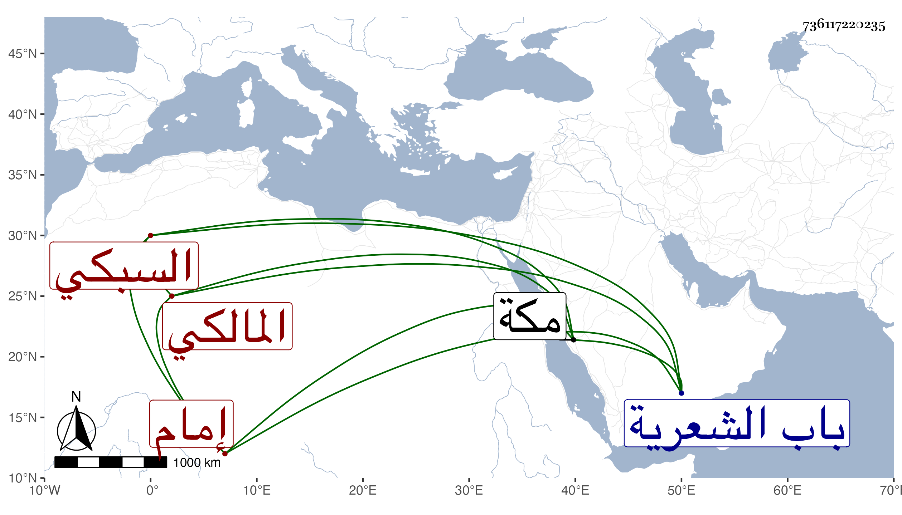

0902Sakhawi.DawLamic.ITO20230111-ara1.EIS1600.736117220235
Biography ID: 736117220235
500
بدر الدين بن الأخنائي محمد بن البهاء محمد بن العلم محمد بن أحمد بن محمد بن أبي بكر . وابن أبي البقاء السبكي محمد بن محمد بن عبد البر وابن التنسي محمد بن أحمد بن محمد بن محمد بن محمد بن عطاء الله وابن جمعة محمد وابن الديري محمد بن عبد الرحمن بن محمد بن عبد الله بن سعد وابن الرهوني المالكي محمد بن علي وابن العداس إمام خانقاه شيخو وخازن الكتب بها ممن سمع من شيخنا وابن الغرس محمد بن محمد بن محمد بن خليل وابن القرافي محمد ابن محمد بن أحمد بن عمر وابن القطان محمد بن محمد بن محمد بن علي بن محمد ابن عمر بن عيسى والأنصاري محمد بن محمد بن محمد بن محمد بن محمد والبغدادي محمد بن محمد بن عبد المنعم الحنبلي والبلقيني أبو السعادات محمد بن محمد بن عبد الرحمن بن عمر وابن أخيه محمد بن أحمد بن محمد بن عبد الرحمن بن عمر والخياط القادري تلميذ الشهاب بن الناصح مات عن سن عالية في يوم الجمعة تاسع عشرى صفر سنة اثنتين وخمسين في زاوية يحيى البلخي بظاهر باب الشعرية ودفن بتربة محمد الخواص وإبراهيم المجذوب المشرفة على بركة أرض الطبالة وكان صالح معتقدا والدجوي نقيب المالكي محمد بن علي بن أحمد بن عمر والسخاوي محمد ابن أخي عبد القادر بن عبد الرحمن بن محمد والسعدي محمد بن محمد بن أبي بكر الحنبلي . والسمسطائي المالكي الموقع لم يكن في صناعته بعصره من يسبقه فيما قيل مات في أيام السعد بن الديري . وشيخ الطائفة العباسية في المحمدين والطلخاوي حسن بن علي بن محمد بن عبد الله القاضي والطنبدي أحمد بن عمر بن محمد والعسقلاني محمد ابن شيخنا أبي الفضل أحمد بن علي بن محمد بن محمد بن حجر والعمري الصوفي محمد بن أحمد بن محمد والفرعني الصفدي قاضيها الشافعي مات في شوال سنة ثمانين . والقلعي محمد بن عمر بن أحمد والكلستاني هو محمد بن عبد الله والمارداني محمد بن محمد بن أحمد بن محمد بن أحمد بن محمد . والمسعودي الشاهد محمد بن محمد بن غلام الله والهندي البنجالي المقيم بباب السدرة مات بمكة في جمادى الأولى سنة ثمان وخمسين أرخه ابن فهد وانسان كان في خدمة يوسف بن تغري بردى مات في سنة ست وخمسين .
